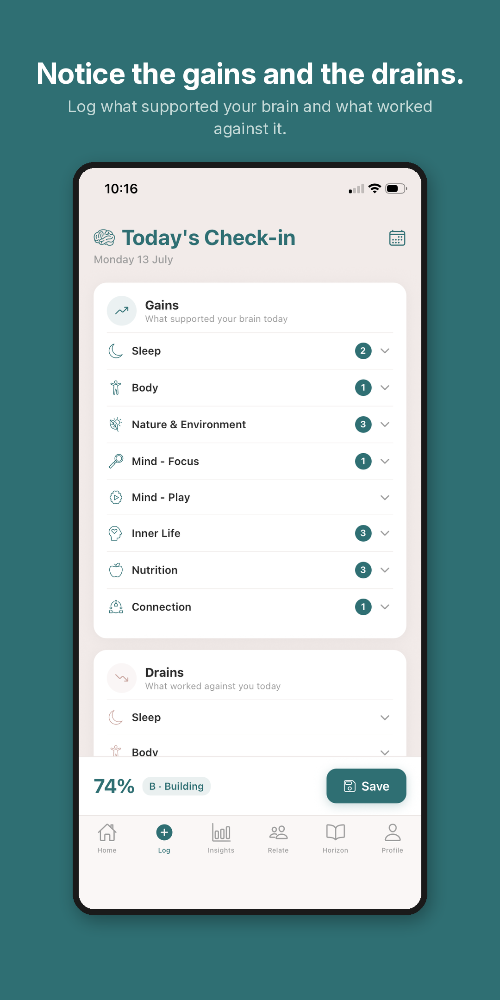
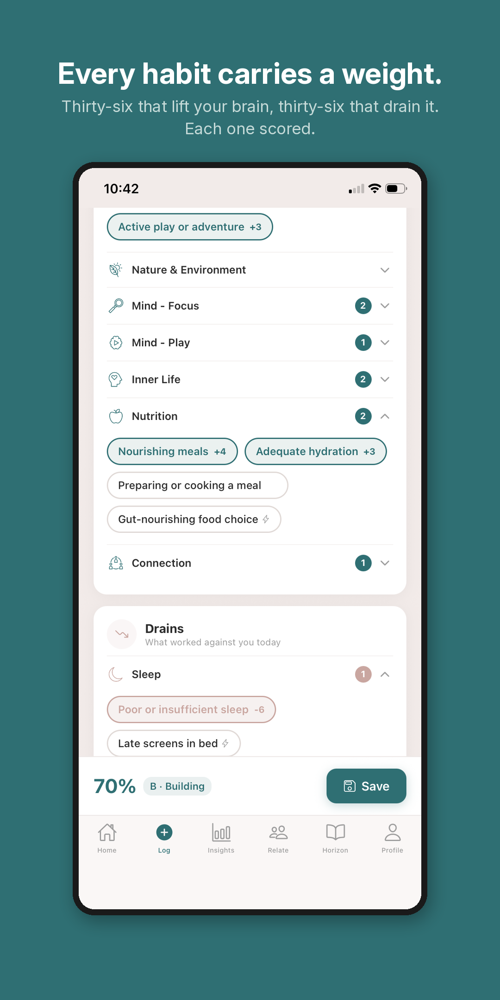
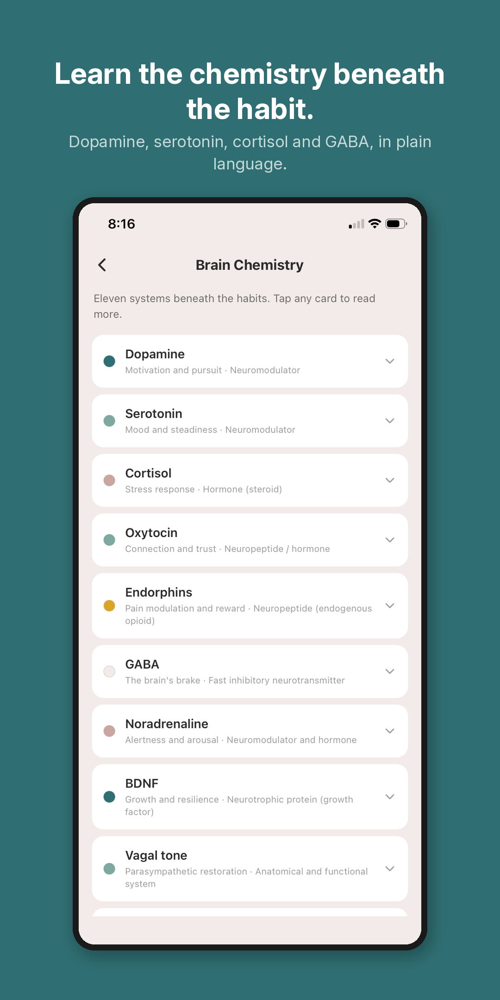

About
The most important organ we own is the one we understand least.
My Brain Sage began as a conviction: that we know how to care for a body and almost nothing about caring for the mind that runs everything else.
We have a rich, everyday language for physical health. Muscles and miles, reps and rest days. We can all picture how it works. We have almost no equivalent language for the brain, not the brain as a feeling, but the brain as a living, chemical, changeable thing. That gap is what this app exists to close.
What brain literacy means
Everyone understands that lifting weights builds muscle. You do the work and over time you can see the result. The cause and the effect are visible to you and so you believe it.
Almost nobody is taught the equivalent facts about the brain. That morning light helps calibrate cortisol. That meditation strengthens GABA tone. That a vigorous walk shifts dopamine and serotonin. That lost sleep quietly weakens memory. These are not vague wellbeing ideas. They are specific, evidence-based and almost entirely absent from public literacy.
Brain literacy is the practice of understanding how your daily choices shape your brain chemistry and carrying that understanding with you for life. My Brain Sage does for the brain what the mirror does for the muscle. It makes what is happening inside more apparent and gives you the literacy to understand it.
How it works
In practice it is simple. Each day you note what you did and did not do, from a catalogue of habits that shape the brain. The app turns that into a single reading it calls your Brain Gauge, along with a plain sense of what lifted you and what drained you. It offers one thing worth noticing, never an instruction to follow. You log the day and the app reflects the chemistry back to you.



A compass, not a coach
The app observes and surfaces patterns in what you log. It never prescribes, judges or shames. You are the expert on your own life. The app is a compass for a practice you are building and the name says so: the sage is you, emerging through your own attention over time.
It is built to be outgrown. After an active phase of roughly 100 days you graduate, carrying a wiser brain and the literacy to keep it that way. The app is designed to be used, learned from and in time set down.
Why it exists
This project is personal. Across my life I have watched people carry a strain in the mind they had no language for, often privately, often while the rest of life looked entirely ordinary from the outside. At a younger time, I knew something of it myself. It can sit quietly beneath a normal week and only at its hardest does it become overwhelming.
I watched someone close to me, of an older generation, live at times with that strain. I think it was compounded by never being shown or taught the mechanics of the mind: the sense that your mood and how you think rest on a chemistry you can learn to notice and gently shape. The vocabulary of his day was often blunt: being offered a vague explanation or the familiar advice to get outside, exercise and sleep well. Sometimes it was simply, 'just get on with it'. None of it wrong, exactly, but none of it brain literacy.
I have also seen the same strain with someone closer to my own age. Someone I cared for. It belongs to no single generation and it is not a failing in anyone who carries it for a time. Very few of the older generation and few of mine were ever offered that deeper understanding. Not knowing what is happening inside your own mind is its own kind of powerlessness. From where they stood, perhaps it felt, at times, as though there was no way through.
I do not believe the door stays closed. Awareness can be built and the skill grows from it. With learning comes a real chance to rebuild what has weakened and strengthen what is already strong. My Brain Sage is the literacy they were never offered, made plain now, for anyone willing to look.
The shape of the project
My Brain Sage is built by one person, deliberately and without growth pressure. It is meant to be a genuine piece of craft, useful to a small and devoted group of people rather than scaled to everyone. Your brain-health data never leaves your phone. There is no server and no third party that holds it. That is a permanent commitment and it is part of what the app is.
Return to the home page, or read the privacy commitment in full.